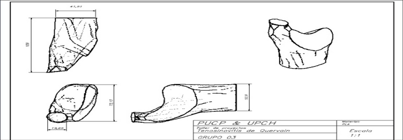
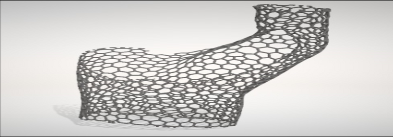
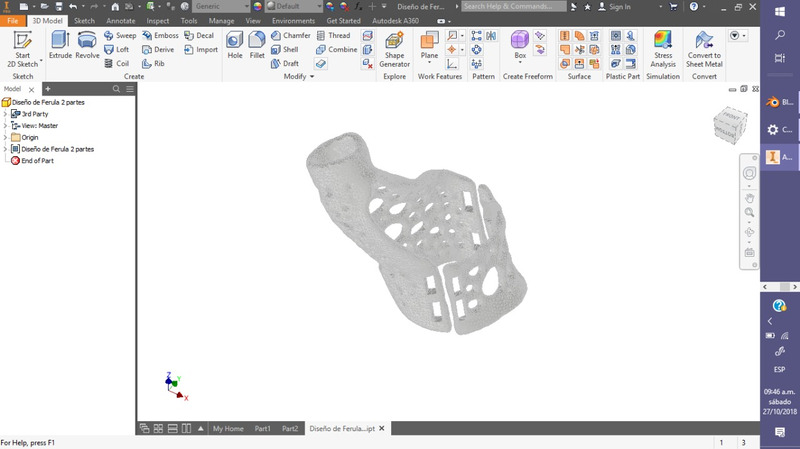
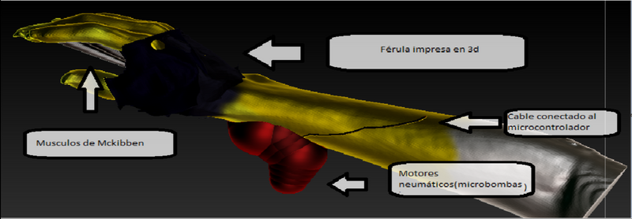
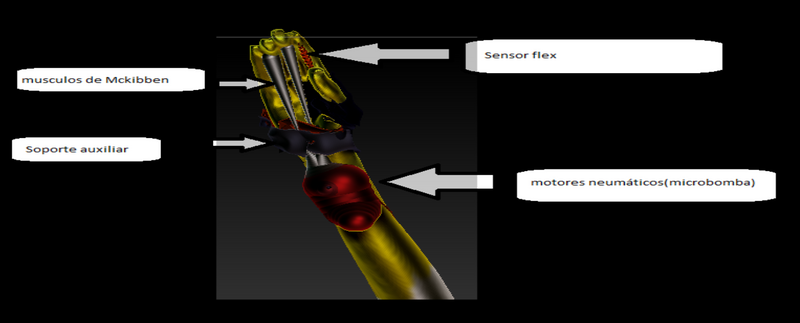

ELABORACIÓN DE DIBUJOS, PLANOS, MODELOS Y MAQUETAS
PLANOS DE LA FÉRULA
PRIMER MODELO
OBSERVACIONES:
- Nos dimos cuenta que, a la hora de la impresión de la férula, la mano no podía entrar puesto que la zona de la muñeca de la férula era de diámetro mucho más corto que la zona de mayor diámetro de la mano.
- Por consiguiente, decidimos desarrollar otro modelo de férula, en el cual se desarrolló haciendo un corte planar y dividirla en dos partes, en donde cada parte tendrá 4 huecos para que así poder ajustarlo con cintas de velcro.
SEGUNDO MODELO
OBSERVACIONES:
- Con el segundo diseño de la férula, ocurrió el incidente de que las partes en huecas donde se pensaba colocar las tiras velcro se rompieron por su delgadez, esto ocasionó que discutamos dentro del grupo para solucionar el problema, por lo cual se diseñará otra férula con solo dos huecos en cada sección y colocándolo a una distancia de la zona planar que se había cortado la férula mayor que la de nuestro segundo diseño.
TERCER INTENTO
OBSERVACIONES:
- La mayor duda que se tenía dentro del prototipado era si la tijera no iba a interferir con la paso de aire dentro de los músculos de Mckibben, pero en el desarrollo del diseño 3D del prototipo con el programa Z-Brush se vio que no era ningún problema.
 